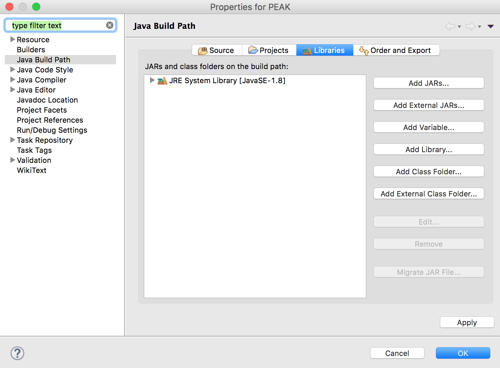

This package provides a Java implementation of PEAK, the first tool to automatically generate the pyramid models that enables the whole automatical assessment of both human and machine summaries. For more details about the approach please refer to our paper.
After installing Eclipse or another Integrated Development Environment (IDE), you can new a java project, for instance, with the name "PEAK". Then please put the source codes into your "workspace/PEAK/src". You may need ADW when running our source codes. If you are using Eclipse, you can download the jar package of ADW, and add it to your project as external jars, together with other supported files of ADW. To save your time, here are all the external JARs including ADW ones. You need to add them following the steps below.

For the supported files of ADW, you need to add them into your "workspace/PEAK" as follows.
Java 8 (JRE 1.8) or higher
There are different aims to run PEAK. Model 1: Given model summaries, generate the pyramid; Model 2: Given a pyramid it already generated, score new summaries; Model 3: Given model summaries and summaries to score, generate the pyramid and the scores.
Here are the sample dataset including input and output. You can add it into "workspace/PEAK" as follows.
When you run "model1.java" in the picture below for Model 1, you can generate the pyramid given model summaries. Model 1 is supported by 11 small codes (from "step1.java" to "step11.java") and each has its own unique purpose. That is, the final result of "step11.java" is the pyramid, and all the other results of the previous steps are the temp results needed for generating the pyramid. "model2.java" is for Model 2, i.e., scoring new summaries given a pyramid you already generated. And "model3.java" is for Model 3.
Please note that, for other dataset that you want to use, you should replace the names of input files (model summaries and students’ summaries) according to your dataset. Here are four places that need your revisions: "step1.java", "step6.java", "step7.java", "step12.java".
Please also note that, you may need ClausIE to pre-process your input files. Here are the tutorial and the source code and binaries of ClausIE.
PEAK: Pyramid Evaluation via Automated Knowledge Extraction Copyright (c) 2015 Qian Yang. All Rights Reserved.
If you use this system, please cite the following paper:
PEAK: Pyramid Evaluation via Automated Knowledge Extraction. BiBTeX Qian Yang, Rebecca J. Passonneau, Gerard de Melo. In: Proceedings of the 30th AAAI Conference on Artificial Intelligence (AAAI 2016). AAAI Press.
For more information or bug reports please contact: laraqianyang[at]gmail[dot]com.
Version 2.0 -- February 8, 2016.